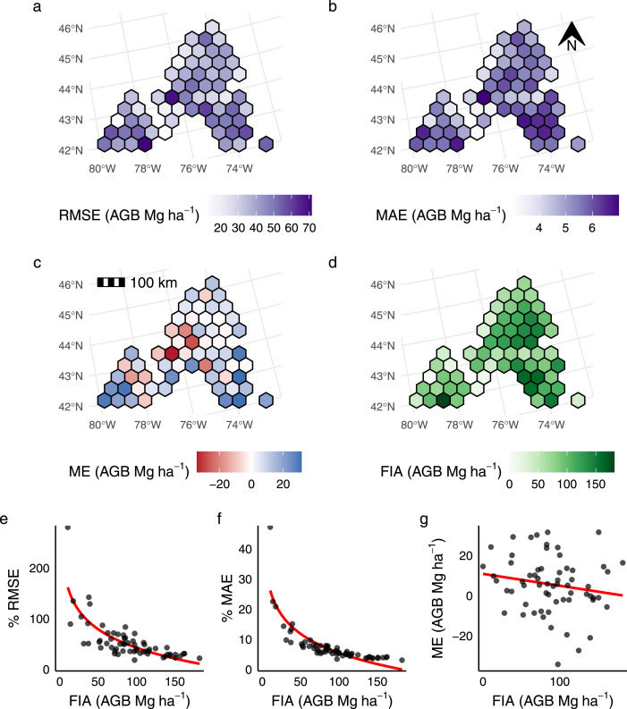

I’m part of the team behind a new open-access article, “Fine-resolution landscape-scale biomass mapping using a spatiotemporal patchwork of LiDAR coverages”, newly out in International Journal of Applied Earth Observation and Geoinformation.1 The paper was lead by my incredible coworker Lucas Johnson, and is his first first-author paper – and what a powerful way to enter the field!

This paper is, plain and simple, the first public documentation we’ve released about how we’re helping New York State track how much carbon is stored in its forests statewide. Using a patchwork of LiDAR collections and FIA field measurements, we use a stacked ensemble (a linear regression combining a random forest, LightGBM-based gradient boosting machine, and support vector machine) to estimate forest aboveground biomass (all the woody non-root bits of a tree, which2 are made out of carbon pulled out of the atmosphere) at a 30 meter resolution across New York State. This data is already being used to identify high-priority areas across the state where the most carbon is currently stored and where a- and re-forestation might have the greatest impacts in the future.
This is very exciting in and of itself, but I’m also extremely proud of the effort we put into validating our predictions, to make sure we’re speaking only with exactly as much confidence as we deserve. We use the area of applicability from Meyer and Pebesma (2021) to mask out areas where LiDAR data is too “different” from what our models were trained with, in order to make sure we aren’t accidentally extrapolating into areas our models aren’t prepared to handle. We implement the Riemann et al. (2010) multi-scale assessment procedure to make sure our predictions are useful when aggregated to other scales. We look at our error spatially and as a function of FIA-measured AGB to try and fully characterize where our models succeed and where they need a bit more work. The goal is for our maps to be useful, and not just “pretty pictures”.

In addition to Lucas (who, I cannot stress enough, did a fantastic job leading this paper), I was lucky enough to get to work with Eddie Bevilacqua, Steve Stehman, Grant Domke, and Colin Beier on this one. It’s a great team and a great project, and I’m very excited for the things we’ve got coming down the pipeline next.